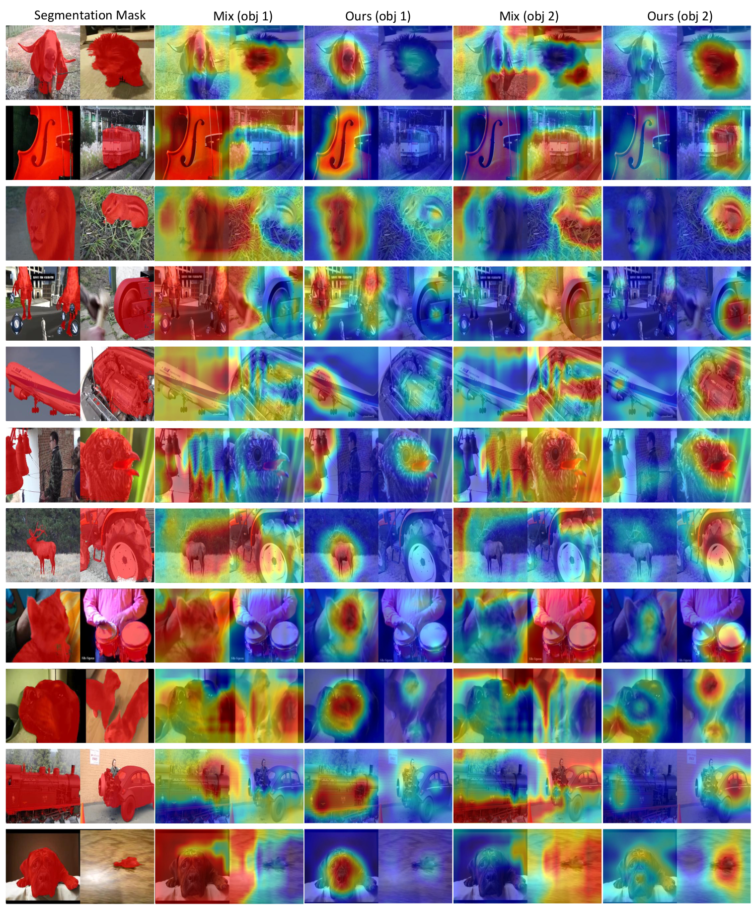
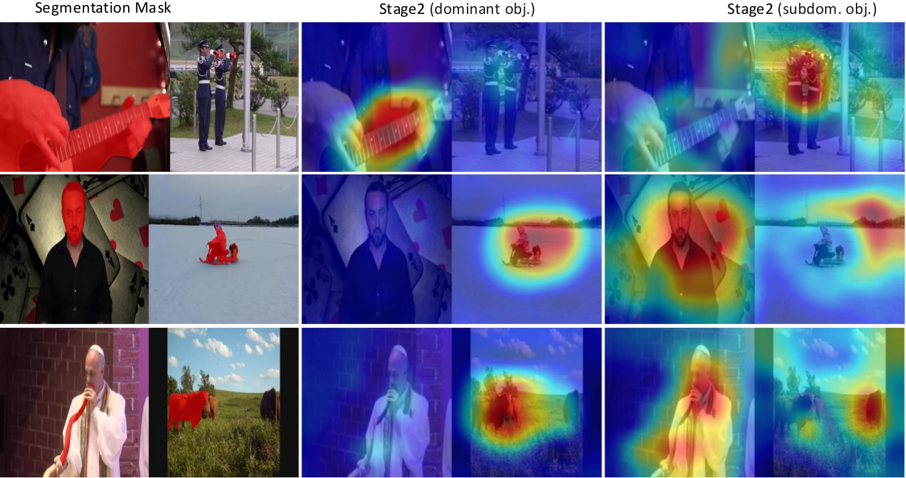

When a contrastive audio-visual model is trained on mixed audio with two sounding objects, it does not split its attention evenly. It spontaneously commits to one source — the one it becomes biased toward.

SCAV turns the one-source bias into a feature, not a bug: it uses the dominant source as a spatial prior to progressively uncover the subdominant one.

Contrastive learning on the mixed audio drives the model to converge on a single source, yielding a clean spatial prior Mdom — no annotations required.
Using Mdom as a prior, the model decouples the remaining audio-visual correspondence and localises the second source Msub in the same forward pass.

SCAV achieves the best performance among self-supervised methods across benchmarks — and even surpasses some weakly-supervised methods on certain metrics. All charts below compare self-supervised methods only.



Existing benchmarks compare continuous heatmaps against bounding boxes, which include large background regions and systematically bias the metrics. We add pixel-level segmentation masks for spatially-aligned evaluation.


@inproceedings{hu2026scav,
title = {Whence the Voice? Self-supervised Dual-source Audio-Visual
Localisation via Selective Convergence},
author = {Han Hu and Dongheng Lin and Yuqi Hou and Haotian Li and
Hyung Jin Chang and Jianbo Jiao},
booktitle = {European Conference on Computer Vision (ECCV)},
year = {2026}
}